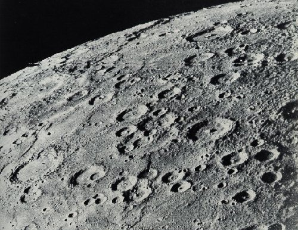

Mercury is the closest to the Sun, so it has the shortest orbit. If you measured by Earth time, it would have it’s birthday three times a year. That’s a lot of cake. Mercury has nothing orbiting around it to keep it company while it travels, but it hasn’t complained or said anthing about it so it’s probably fine, although it could be why it’s so moody. Moody as in it has no atmosphere to trap heat in, to it has the most varying surface temperatures of any planet.

A closeup of the surface of Mercury